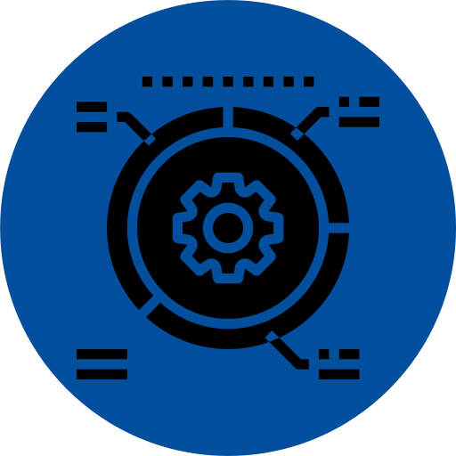

<div class="telemetry-cont " telemetryEventsButton>
  <button id="telemetry-btn" class="sb-btn sb-btn-normal sb-btn-outline-primary mr-8 ng-star-inserted" type="button" (click)="openModal()">
    <i _ngcontent-mrt-c56="" class="blue share alternate icon"></i> Errors 
  </button>
</div>

<!-- Floating Social Media bar Starts -->
<div class="telemetry-cont">
  <div class="telemetry-float-icon float-icon">
  
    <a href="" target="_blank"> Chat with us!</a>
  </div> 
</div>

<!-- Floating Social Media bar Ends -->

<sui-modal *ngIf="showTelemetryEventsModal" [mustScroll]="true" [isClosable]="true" [transitionDuration]="0" [size]="'large'"
  class="sb-modal sb-modal-addsummary" appBodyScroll #modal (dismissed)="modal.deny();closeModal()">
  <div class="sb-modal-header">
    {{input?.title}}
  </div>
  <div class="sb-modal-content o-x-hide">
    <sb-datatable [name]="'Telemetry events'" [message]="" [data]="telemetryEventsArr" [columns]="columns"
              [downloadCSV]="true" (downloadLink)="onDownloadLinkFail($event)" ></sb-datatable>
  </div>
</sui-modal>
